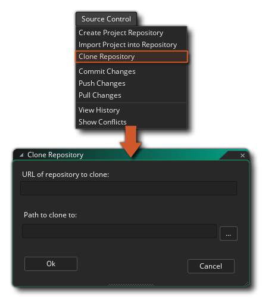
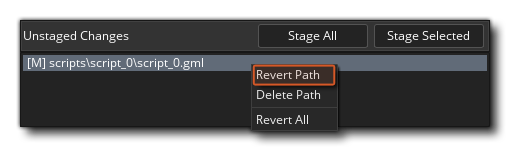

Source Control Management (SCM) es el nombre que se le da al método de trabajar con subversiones o copias de seguridad de sus proyectos a través de un repositorio y una fuente local. Básicamente, una solución SCM es un paquete de software independiente que controla todos los aspectos del mantenimiento, cambio y comparación de las versiones de su proyecto a medida que trabaja en él. Esto es especialmente útil para aquellos que trabajan en equipo y necesitan poder controlar quién hace qué y no se preocupan por perder datos o hacer cambios que pueden ser deshechos en una fecha posterior, pero los individuos pueden beneficiarse de este potente y flexible sistema también
Existen varias herramientas SCM disponibles para usted, y GameMaker Studio 2 incluye un complemento Git incluido que se puede usar de inmediato, y no tiene necesidad de instalar ningún paquete adicional, ya que está incluido en el mismo complemento. A continuación le ofrecemos un pequeño tutorial sobre cómo configurar este complemento y cómo utilizar las herramientas de SCM con un proyecto. En la parte inferior de la página también ofrecemos una descripción general del menú contextual de SCM, al que también se hace referencia en las secciones de tutoriales.
En primer lugar, debemos configurar una identidad para que Git se comprometa, lo que significa que debemos ir a la sección Complementos - Control de fuente (Git) de las Preferencias y agregar sus detalles de autenticación.
Esta identidad de autenticación se utilizará para todos los proyectos futuros, y GameMaker Studio 2 le ofrece dos formas diferentes de configurarla:
- Nombre de usuario y contraseña: al hacer clic en el botón "Agregar nuevo usuario / Autenticación de pase" aparecerá la siguiente ventana en la que puede ingresar la URL del repositorio, el nombre de usuario y la contraseña:
Si desea que esto afecte solo a un repositorio específico, coloque la URL del repositorio en el campo superior. Sin embargo, si lo que desea es la autenticación de todo el dominio (es decir: " bitbucket.org "o" github.com ") luego simplemente coloque el dominio y nada más. Cuando algo necesite verificar la autenticación, primero buscará una coincidencia de repositorio específica y luego una coincidencia de dominio. Esto le permitirá tener una autenticación predeterminada para un dominio y anularla. Con detalles específicos para ciertos repositorios posteriores.
NOTA: Si está utilizando un repositorio externo, debe usar el nombre de usuario y la contraseña asociados con la cuenta configurada para ese repositorio, pero si desea usar un repositorio local, puede usar cualquier nombre de usuario y contraseña.- SSH Keypairs: al hacer clic en "Agregar nueva SSH Keypair Authentication" aparecerá la siguiente ventana en la que puede ingresar la URL y la contraseña del repositorio antes de proporcionar las rutas a los archivos de clave pública y clave privada requeridos:
Al igual que las autenticaciones de nombre de usuario / contraseña, puede tener autenticaciones específicas de dominio y repositorio al usar pares de claves SSH. Si ya tiene un SSH Keypair generado, puede configurar las rutas aquí, así como cualquier contraseña requerida para acceder a ellos. Tenga en cuenta que si necesita un acceso rápido a la clave pública, el botón Copiar
copiará automáticamente los contenidos al portapapeles para usted. Si aún no tiene un par de llaves SSH, al hacer clic en el botón Crear par de llaves aparecerá un cuadro de diálogo de archivo donde se colocará la clave privada, y la clave pública se creará adyacente a ella. Esto completará las rutas al Claves públicas y privadas automáticamente para ti.
Estas configuraciones ahora se utilizarán para comunicarse con el repositorio (IE: Git Hub, Bit Bucket, etc.) cuando se manejan las solicitudes de clonación, inserción y extracción. Sin embargo, aún debe configurar las opciones por proyecto que se pueden hacer abriendo las Opciones principales y haciendo clic en la opción Habilitar control de código fuente. Esto activará SCM para el proyecto actual.Una vez que haya habilitado el control de fuente (y lo haya aplicado o cerrado las Opciones de juego), aparecerá un nuevo menú contextual en la parte superior del IDE con la siguiente opción (que exploraremos en el resto de las secciones de esta página):
NOTA: Si necesita editar los detalles de autenticación nuevamente, simplemente haga doble clic en la entrada y se abrirá la ventana de detalles para que los edite, pero no podrá cambiar el nombre de la URL. Si necesita cambiar la URL, deberá eliminar los detalles de autenticación y volver a agregar. Para eliminar los detalles de autenticación, haga clic en el botón de cierre a la izquierda de la fila en la ventana principal de Preferencias.
Ahora debe vincular el IDE de GameMaker Studio 2 a un repositorio:
- Crear un repositorio de proyectos
- Empuje el proyecto actual en un repositorio externo
- Clonar un repositorio existente
En el primer caso, al crear un repositorio de proyectos, esto creará un repositorio Git directamente donde está su proyecto. En el lenguaje de Git, este es un "repositorio no desnudo", por lo que Push / Pull no tiene sentido en este caso, pero aún puede confirmar y hacer un seguimiento de los cambios del proyecto, así como revertir los cambios y las revisiones si es necesario. Para configurarlo, solo necesita hacer clic en Control de fuente > Crear repositorio de proyecto en el menú principal.
Sin embargo, es posible que ya tenga un proyecto existente y desee ubicarlo en un repositorio externo para realizar un seguimiento y compartir entre su equipo. Esto requiere que ya se haya configurado un repositorio externo, así como el nombre de usuario y la contraseña correctos establecidos en sus preferencias de identidad para acceder a él. Si tiene esto listo, haga clic en Control de fuente > Importar proyecto en el repositorio y complete la URL.
Finalmente, como una función de conveniencia, puede clonar un repositorio externo a través del IDE. Una vez más, necesitará el nombre de usuario y la contraseña para el repositorio al que se va a conectar para configurar en sus preferencias de identidad, y luego solo tiene que hacer clic en Source Control > Clone Repository. Complete la URL (usando la variante HTTPS en lugar de SSH) y diga a dónde quiere que vaya. 
Una vez que se haya completado la clonación, se abrirá automáticamente un explorador de archivos para que pueda abrir el proyecto si lo desea.
A medida que trabaje en su proyecto, naturalmente creará sprites, editará guiones, eliminará líneas de tiempo y todo lo que se requiera a medida que su proyecto se desarrolle con el tiempo. Estas son todas las acciones de las que tal vez desee realizar un seguimiento y volver si algo sale mal. Esta es la razón principal para usar Source Control, para que cualquier accidente se pueda revertir, y lo guiaremos rápidamente desde el inicio para que comprenda cómo funciona esto.
Desde el principio, cree un nuevo proyecto GML y luego active el control de fuente a través de las opciones principales. Esto nos da acceso al menú de control de fuente en la parte superior, por lo que iremos inmediatamente a Crear repositorio de proyectos. Si observa los recursos de la sala, puede ver que la sala predeterminada ha ganado una exclamación roja.
, lo que significa que ha sido modificado desde su último estado. Si tuviéramos otros recursos en el proyecto, vería que todos tienen el mismo icono que se muestra en la siguiente imagen:
Ahora tenemos la opción de enviar el proyecto en blanco como está, o llevarlo a un estado base. Por ahora, haremos nuestro primer compromiso, así que haga clic en Control de fuente > Confirmar cambios. Esto nos dará ahora una ventana dividida en tres áreas:
- Cambios escalonados: representan los cambios que se confirmarán en la fuente. Es probable que esté en blanco, pero puede mostrar un cambio en las opciones principales, lo cual está bien.
- Cambios sin etapas: esto muestra los archivos que han cambiado, pero que no le hemos dicho a Git que queremos confirmarlos, están "pendientes" los cambios.
- Mensaje de confirmación: esta es una nota que podemos agregar para explicar cuáles son los cambios.
Por ahora, haga clic en el botón Etapa Todo, ya que queremos confirmar todos los cambios y escriba algo como "¡Primero confirme!" en el Mensaje de confirmación y haga clic en Confirmar. Todos nuestros recursos deberían tener ahora una marca verde.
, lo que significa que no se han encontrado modificaciones.
Vale la pena señalar que a medida que trabaje dentro de esta ventana, los distintos mensajes en Escenario y Sin Escenario serán precedidos por un símbolo. El símbolo que se utiliza variará según la operación y el archivo, y se utilizará lo siguiente:
- [...] - Cambio por etapas (antes era [A] )
- [+] - Agregado recientemente
- [->] - Renombrado / Movido
- [-] - Eliminado
- [M] - Cambios sin etapas
- [?] - Archivo sin seguimiento
- [!] - Archivo perdido
Nuestro proceso de trabajo ahora puede comenzar, y podemos comenzar a construir nuestro proyecto y guardar y confirmar cambios, tal como lo hemos hecho en los párrafos anteriores.
Después de trabajar durante un tiempo, es posible que desee comprobar y ver lo que ha comprometido en un momento dado, por lo que tendrá que abrir el Historial de confirmaciones. Para abrir la ventana del historial, simplemente vaya a Control de fuente > Ver historial, que abre otra ventana con tres paneles:
El panel superior describe las confirmaciones, el panel central describe el comentario dado a la confirmación seleccionada y el panel inferior describe los archivos que se han modificado en esta confirmación. Tenga en cuenta que si ha configurado una herramienta de diferencia, entonces al hacer doble clic en cualquier archivo en esta ventana, se abrirá la herramienta de diferencia y podrá ver los cambios entre los archivos.
Anteriormente, ha visto cómo crear un repositorio y comprometerlo con él, pero ¿qué sucede si comete un error y desea "retroceder" a un compromiso anterior? Hagamos un error deliberado y veamos cómo podemos lidiar con él entonces...
En primer lugar, cree un nuevo recurso (en este ejemplo, crearemos un recurso de Script) e inicialmente no verá un icono de estado, ya que, en lo que respecta al control de código fuente, aún no existe. En el recurso de script, agregue una línea simple de código, como:
show_debug_message("Hello World");
Si ahora cierra el editor de código, la secuencia de comandos se guardará y el icono de archivo modificado
Los cambios efectuados serán:
- el archivo de proyecto.yyp
- un archivo de vista
- el propio script GML
- el archivo.yy haciendo referencia a él
Debe escribir un mensaje de confirmación y luego hacer clic en el botón Confirmar, tal como lo explicamos anteriormente. Ahora, volvemos a nuestro script y cambiamos la línea de código a (por ejemplo):
show_debug_message("Hello World, how are you?");
Cuando cerramos el editor de código, nuevamente se mostrará un icono rojo junto al script, pero nos dimos cuenta de que cometimos un error con nuestro código y queremos volver a una versión anterior para corregirlo (obviamente, simplemente puede abra el script y repárelo fácilmente, ya que el ejemplo es muy simple, pero en proyectos grandes, normalmente no es un enfoque factible). Lo que tenemos que hacer es revertir nuestros cambios.
Para revertir un cambio, primero tenemos que abrir la ventana de confirmación, por lo que vamos a Control de fuente > Confirmar cambios una vez más. Nuestro archivo modificado volverá a estar listo para la confirmación, pero esto no es lo que queremos, así que hacemos clic en el botón Unstage All (Eliminar en escena) para sacarlo del área de preparación.
Si ahora hacemos clic derecho
en el archivo que cambiamos obtendremos un menú contextual con una opción para Revertir ruta: 
Cuando seleccione esta opción, revertirá los archivos al estado anterior en el que estaban.
¡IMPORTANTE! Cuando vuelva, recibirá un mensaje que le solicitará que vuelva a cargar o guarde el proyecto actual debido a que el comprobador de archivos detecta cambios en el disco:Debe pulsar Recargar y no guardar, ya que guardar guardará la memoria en lugar de volver a cargar los archivos revertidos.
Eso es excelente para cuando editas algo y quieres volver a cambiar sin haber realizado ya un compromiso, pero ¿qué sucede cuando has realizado uno o más cambios y quieres retroceder a un compromiso anterior? Bueno, vamos a editar nuestro script de nuevo para decir:show_debug_message("This is a bad idea");
Ahora lo comprometemos como antes para ponerlo bajo control de código fuente. Entonces, esta fue una mala idea y queremos retroceder, lo que significa que para comenzar necesitamos abrir de nuevo la ventana Control de fuente > Ver historial. Veremos una lista de todas las confirmaciones anteriores ahora en esta ventana, comenzando con la confirmación inicial, la confirmación para el script, y luego la confirmación para la secuencia de comandos que hemos editado como una "mala idea":
Ahora tenemos dos opciones. Podemos revertir una revisión completa, que revertirá todos los archivos que se cambiaron a los de la confirmación elegida, o podemos revertir una ruta, que simplemente revertirá un solo archivo. Vamos a hacer la primera opción para comenzar con:
- Botón derecho del ratón
- Seleccione Revertir a esta revisión y luego elija Volver a cargar en el mensaje de advertencia.
Debería ver que el script ahora tiene un icono de estado rojo
Luego podemos comprometernos con el proyecto y volveremos a donde estábamos una vez más. Sin embargo, también podemos deshacer esa acción para el archivo y recuperar nuestra "mala idea" confirmando lo siguiente:
- Abra la ventana Confirmar cambios.
- Libera el guión con el código "Hello World".
- Botón derecho del ratón
¡Ahora volvemos a tener el archivo erróneo en el proyecto otra vez! Bueno, podemos aprovechar esta oportunidad para revertir solo la ruta del archivo en lugar de reenviar todo a una revisión anterior. Para eso necesitamos hacer lo siguiente:
- Abra la ventana Ver historial.
- Haga clic en la segunda confirmación (la confirmación "Hola mundo").
- Botón derecho del ratón
Deberíamos volver a tener nuestro código "Hello World" y luego podemos hacer un nuevo compromiso para actualizar el control de fuente nuevamente con el archivo corregido.
Cuando su proyecto se almacena en un repositorio externo, debe recordar empujar los cambios y extraer los nuevos. La razón de esto es que cuando te comprometes, almacenas tus cambios localmente, lo que te permite trabajar lejos de una conexión a Internet y sincronizarte cuando estés listo, y para sincronizar los cambios en el repositorio remoto. La extracción de cambios significa que desea extraer de su repositorio local cualquier cambio que otros hayan realizado desde el repositorio remoto. Sin embargo, esto significa que puede haber ocasiones en que las personas puedan editar los mismos archivos, lo que a su vez crea un conflicto de combinación. Necesita saber cómo manejar estos conflictos, por lo que vamos a crear uno de forma deliberada ahora y luego le mostraremos cómo lidiar con él.
NOTA: No se recomienda compartir un repositorio de proyectos local (incluso a través de un servicio de sincronización de archivos como Dropbox), ya que los compromisos generalmente se escriben directamente en él y, por lo tanto, tiene muy poca protección de conflictos.
Para generar nuestro conflicto, primero necesitamos tener dos repositorios locales, uno para el repositorio principal y otro para nuestra copia. Para crear esto necesitamos clonar el repositorio, que se realiza con los siguientes pasos:
- Vaya a Source Control > Clone Repository.
- En el campo de URL, escriba la ruta al proyecto que configuramos en la guía de Revertir archivos arriba (de manera predeterminada, esto será D:\Users\<Username>\Documents\GameMakerStudio2\<ProjectName> ).
- A continuación, debe establecer una ruta para clonar a:
Cuando haga clic en el botón "Aceptar", recibirá la siguiente advertencia sobre cómo intentar clonar un repositorio "no disponible":
Puede hacer clic en "Aceptar" aquí de nuevo.
- Ahora se le presentará un explorador de directorios para crear un repositorio de proxy "simple" (este es un repositorio que puede almacenar de forma segura en Dropbox, por ejemplo). Busque el lugar donde desea crear este repositorio proxy y seleccione (o cree) la carpeta a usar.
Una vez que haya hecho eso, GameMaker Studio 2 enviará su proyecto original al proxy, y colocará uno nuevo en la ruta que estableció en la ventana Repositorio de Clones y luego abrirá automáticamente un explorador de archivos para que pueda abrir el proyecto almacenado. Si ahora va a Control de fuente > Ver historial, veremos nuestras confirmaciones originales más un nuevo "Empuje para clonar":Ahora ha clonado su repositorio y puede continuar trabajando en la versión local del proyecto.
En esta sección, analizaremos la resolución de conflictos entre un repositorio local clonado y un repositorio principal (consulte la sección sobre Clonación para obtener más detalles). Suponiendo que ahora está utilizando un repositorio local, tendremos que editar un archivo y luego causar algún tipo de conflicto, así que abra el script de prueba que hemos estado usando y cambie el mensaje "Hola mundo" a algo como esto:
show_debug_message("Hello World, How Are You?");
Ahora debe guardar el proyecto y enviarlo al repositorio local. Ahora, ya que estamos vinculados a un repositorio maestro remoto (incluso si es uno que hemos clonado en el mismo disco) necesitamos hacer un Push para que los cambios se hagan maestros. Para eso, vaya a Source Control > Push Changes, que nos dará una actualización de estado en la pestaña Source Control Output:
Ahora necesitamos abrir nuestro proyecto original (no el clonado), así que busque el lugar donde lo guardó en el disco, o simplemente verifique los Proyectos recientes en el menú Archivo, ya que debería estar directamente debajo del actual, y cárguelo. en GameMaker Studio 2. Una forma fácil de verificar que tiene el proyecto correcto es simplemente verificar el script que tiene y si el mensaje es "Hello World", entonces tiene el correcto, o puede abrir la ventana Ver historial y verificarlo.
Ahora necesitas editar el script de nuevo, así que haz que lea algo como esto:
show_debug_message("This will cause a conflict.");
Esto se puede guardar en el disco y los cambios se confirmaron, pero si intenta impulsar estos cambios, recibirá el siguiente mensaje:
¡Alguien ya ha impulsado cambios que aún no tienes! Esto significa que necesita hacer un tirón en el repositorio y ver cuál es exactamente el problema, así que vaya a Control de fuente > Tirar cambios. Esto mostrará dos ventanas, la primera es una advertencia sobre los archivos modificados (al igual que con las acciones anteriores, debe elegir Recargar aquí y no guardar), y la otra es la ventana Conflictos:
Esta ventana mostrará los archivos en conflicto en una lista a la izquierda, y puede seleccionar los archivos de esa lista con el botón izquierdo del ratón.
(o seleccione varios archivos usando
+
- Use Itss: esto sobrescribirá los cambios que haya realizado con el del repositorio remoto.
- Usar el mío: esto anulará los cambios del repositorio remoto con los que acaba de realizar.
- Fusionar: esto intentará abrir una herramienta de combinación externa para manejar el conflicto.
- Elija la herramienta de combinación: esto le permitirá configurar la herramienta de combinación (consulte la sección sobre el uso de una herramienta de combinación externa a continuación para obtener más detalles).
Ahora, puede usar los botones para solucionar el conflicto, pero antes de hacerlo, simplemente abra el archivo en conflicto para ver exactamente cuál es el problema. Si abre la secuencia de comandos que está en conflicto, ahora se verá así:
Esto muestra que "Esto provocará un conflicto" se encuentra en la CABEZA (esto es lo que hemos enviado al repositorio local) y que "Hola mundo, ¿cómo estás?" se está extrayendo del maestro, el repositorio remoto. Puede volver a la ventana Conflictos ahora y hacer clic en Usar el suyo para extraer el archivo modificado y sobrescribir el archivo HEAD actual. La secuencia de comandos ahora se marcará como modificada y debe hacer un nuevo compromiso y empujar antes de continuar.
Tenga en cuenta que podríamos solucionar este problema en el IDE de GameMaker Studio 2. Si eliminamos las líneas 1, 2, 3 y 5, nos quedamos con solo show_debug_message(“Hello World, How Are You?”) y guárdelo, eliminará el conflicto, ya que Git asumirá que sabe lo que está haciendo con su propio archivo. Es propenso a errores, por lo que se recomienda instalar una herramienta de combinación y luego configurarla y usarla en lugar de intentar fusionarla manualmente.
Cuando trabaja en un proyecto con otras personas, siempre existe la posibilidad de que haya un conflicto, ya que varias personas editan el mismo archivo y la mayoría de los sistemas de control de origen pueden hacer un buen intento de fusionar cualquier archivo en conflicto, pero cuando hay cambios en el En el mismo lugar, se necesita un poco de ayuda para saber qué hacer. Aquí es donde entra una herramienta de combinación para mostrarle los cambios y permitirle decidir.
Como cada herramienta de combinación es diferente, hay cuatro macros que se pueden usar para ayudar a especificar los archivos que se pueden configurar desde la ventana Conflictos haciendo clic en el botón etiquetado Elegir herramienta de combinación:
Cuando haga clic en ese botón, la ventana de Preferencias se abrirá en el complemento Git:
Aquí proporciona una ruta a la herramienta de combinación elegida y luego una macro (o macros) de Opciones de la herramienta de combinación para usarla al decidir qué hacer, con las siguientes opciones disponibles:
- ${scm_mine}: ruta a tu versión
- ${scm_thers}: camino a su versión
- ${scm_base}: ruta a la versión antes de que ocurrieran los cambios en conflicto
- ${scm_merged}: ruta al lugar donde la herramienta de combinación debería guardar
Como ayuda para la configuración, cuando asigne una ruta a ciertas herramientas de combinación, GameMaker Studio 2 completará algunos valores predeterminados para comenzar, según la herramienta elegida:
- KDiff3: ${scm_theirs} ${scm_mine} -o ${scm_merged}
- Meld: ${scm_mine} ${scm_merged} ${scm_theirs}
- Notepadd ++: ${scm_merged}
- TortugaMerge: /base:${scm_base} /theirs:${scm_theirs} /mine:${scm_mine} /merged:${scm_merged}
Tenga en cuenta que si no tiene (o no quiere usar) una herramienta de combinación, entonces puede abrir el script en el IDE e intentar arreglarlo desde allí.
Entonces, volvamos a nuestro ejemplo Conflicto como se indica en la sección anterior sobre Conflictos... Ha realizado una extracción desde el maestro y uno de los archivos está en conflicto. Esto abre la ventana Conflictos de control de origen, donde puede hacer clic en el script en conflicto y ahora haga clic en Combinar, ya que ha configurado su herramienta de combinación. Al hacer clic en fusionar, ahora se abrirá la herramienta donde puede lidiar con el conflicto y luego usar las macros suministradas para realizar los cambios necesarios. Una vez que haya finalizado y cerrado la herramienta de combinación, el IDE de GameMaker Studio 2 mostrará la siguiente ventana de confirmación:
Simplemente responda "Sí" a esta solicitud, ya que lo hizo usted mismo con la herramienta de combinación, y luego debe confirmar este cambio para indicar el final de la operación de combinación ( Control de fuente > Confirmar cambios. La ventana Confirmar ahora se mostrará que una combinación está en progreso, así como mostrar algunos archivos sin etapas:
Estos archivos sin etapas son nuestro archivo de script con la adición de .base, .ours y .theirs. Podemos eliminar todos estos de forma segura, así que haga clic
Puede hacer clic en Confirmar ahora.
Debido al hecho de que puede tener problemas con los archivos externos, significa que su flujo de trabajo al usar repositorios remotos o compartidos debe ser el siguiente:
Make Changes > Save > Commit > Pull > Merge > Push
También debe configurar una herramienta Diff para usarla cuando realice confirmaciones en un repositorio. Esto se configura desde las Preferencias, igual que para la herramienta Combinar:
La herramienta Diff se configura de forma muy similar a la herramienta Fusionar, pero solo usa la ${scm_base} y ${scm_theirs} opciones - en este caso, ${scm_base} representa el archivo sin modificar mientras que ${scm_theirs} representa el estado actual del archivo. Las Opciones de la herramienta se deben rellenar previamente con las opciones predeterminadas para Meld, KDiff3 y TortoiseMerge, tal como lo fueron para la herramienta Combinar. Tenga en cuenta que GameMaker Studio 2 no admite la salida de parches de diferencia de archivos individuales, por lo tanto, no hay un valor predeterminado para el Bloc de notas.
Para ver los cambios entre las revisiones actuales y anteriores utilizando la herramienta de diferencia, simplemente abra la ventana Confirmar y luego haga doble clic en un archivo. Si la herramienta se ha configurado correctamente, se iniciará y podrá ver los cambios entre los archivos.


Menú contextual de control de fuente
Cuando haya activado Source Control para cualquier proyecto (consulte la sección Configuración del complemento Source Control Git para obtener más detalles), GameMaker Studio 2 mostrará el siguiente menú contextual en la parte superior: 
Aquí describimos cada una de las opciones disponibles (la mayoría de ellas se explican con mayor profundidad en las secciones de tutoriales anteriores):
- Crear repositorio de proyectos: esta opción le permite crear un repositorio local en el mismo directorio que sus archivos de proyectos.
- Importar proyecto en el repositorio: esta opción le permite importar un proyecto a un repositorio externo.
- Clonar repositorio: esta opción le permitirá clonar un repositorio desde un origen a un nuevo destino.
- Confirmar cambios: con esta opción puede organizar archivos modificados en su proyecto y luego enviarlos al repositorio.
- Cambios de inserción: después de realizar una confirmación o una combinación, esta opción se utiliza para enviar los cambios al repositorio principal.
- Extraer cambios: con esta opción puede actualizar el repositorio local extrayendo los archivos modificados del repositorio principal.
- Ver historial: esto abrirá la ventana de historial, donde podrá ver todo el historial de versiones del proyecto y elegir revertir rutas de archivo específicas o revisiones completas.
- Mostrar conflictos: Esto abrirá la ventana Conflictos y mostrará una lista de todos los archivos en conflicto que puedan existir en el proyecto, permitiéndole tratarlos a través del IDE de GameMaker Studio 2 o usando una herramienta de combinación específica.